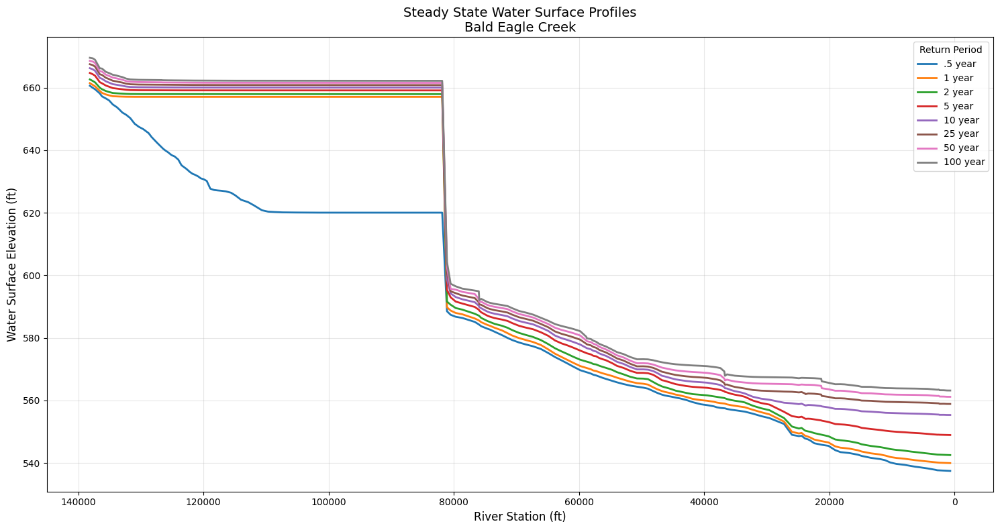

Steady Flow Analysis¶
Overview¶
This notebook demonstrates extracting and analyzing steady flow results from HEC-RAS HDF5 files. Steady flow analysis is fundamentally different from unsteady flow:
Steady Flow: - Single time point (equilibrium conditions) - Multiple flow profiles (e.g., 10-yr, 100-yr, 500-yr) - Results organized by profile, not time - Typical use: Floodplain mapping, bridge design, permitting
Unsteady Flow (see 400-series notebooks): - Time-varying conditions - Single or multiple events - Results organized by time step - Typical use: Dam breach, detention basin routing, real-time forecasting
HDF5 Structure for Steady Flow Results¶
/Results/Steady/
├── Output/
│ ├── Geometry/ # Geometry data
│ │ └── Cross Sections/ # XS coordinates, stations
│ └── Profiles/
│ ├── Max/ # Maximum values across all profiles
│ ├── 100yr/ # 100-year flood profile
│ ├── 500yr/ # 500-year flood profile
│ └── ... # Other flow profiles
Key Differences from Unsteady: - No time dimension - profiles are independent scenarios - Profile names are user-defined (not timestamps) - Typically used for regulatory floodplain mapping (FEMA)
Reference Documentation¶
- HEC-RAS User's Manual, Chapter 9: Viewing Results
- HEC-RAS Hydraulic Reference Manual, Chapter 2: Steady Flow
- FEMA Guidance for Flood Risk Analysis - Steady flow modeling for floodplain mapping
# =============================================================================
# DEVELOPMENT MODE TOGGLE
# =============================================================================
USE_LOCAL_SOURCE = False # <-- TOGGLE THIS
if USE_LOCAL_SOURCE:
import sys
from pathlib import Path
local_path = str(Path.cwd().parent)
if local_path not in sys.path:
sys.path.insert(0, local_path)
print(f"📁 LOCAL SOURCE MODE: Loading from {local_path}/ras_commander")
else:
print("📦 PIP PACKAGE MODE: Loading installed ras-commander")
# Import ras-commander
from ras_commander import HdfResultsPlan, RasCmdr, RasExamples, init_ras_project, ras
# Additional imports
import h5py
import numpy as np
import pandas as pd
import matplotlib.pyplot as plt
# Set pandas display options
pd.set_option('display.max_rows', 10)
pd.set_option('display.max_columns', None)
# Set to False to disable plot generation for llm-friendly outputs
generate_plots = True
# Verify which version loaded
import ras_commander
print(f"✓ Loaded: {ras_commander.__file__}")
📦 PIP PACKAGE MODE: Loading installed ras-commander
✓ Loaded: c:\Users\billk_clb\anaconda3\envs\rascmdr_piptest\Lib\site-packages\ras_commander\__init__.py
Parameters¶
Configure these values to customize the notebook for your project.
# =============================================================================
# PARAMETERS - Edit these to customize the notebook
# =============================================================================
from pathlib import Path
# Project Configuration
PROJECT_NAME = "Balde Eagle Creek" # Example project to extract
RAS_VERSION = "6.6" # HEC-RAS version (6.3, 6.5, 6.6, etc.)
# HDF Analysis Settings
PLAN = "02" # Plan number (for HDF file path)
TIME_INDEX = -1 # Time step index (-1 = last)
PROFILE = "Max" # Profile name for steady analysis
HEC-RAS Steady State Flow Analysis¶
This notebook demonstrates how to extract and analyze steady state flow results from HEC-RAS using the ras-commander library. It showcases the new steady state functionality in HdfResultsPlan.
New Steady State Methods¶
The library now includes full support for steady state analysis:
- is_steady_plan() - Check if HDF contains steady state results
- get_steady_profile_names() - Extract steady state profile names
- get_steady_wse() - Extract water surface elevations for profiles
- get_steady_info() - Extract steady flow metadata and attributes
Extracting Steady Flow Computation Messages¶
For steady flow analyses, computation messages provide valuable information about: - Hydraulic computations and convergence - Warning messages for critical flow or other conditions - Computation timing and performance
We can extract these using HdfResultsPlan.get_compute_messages():
# Extract the Bald Eagle Creek project using suffix parameter (consistent with other notebooks)
bald_eagle_path = RasExamples.extract_project(PROJECT_NAME, suffix="19")
print(f"Extracted project to: {bald_eagle_path}")
2026-01-12 00:32:44 - ras_commander.RasExamples - INFO - Found zip file: C:\Users\billk_clb\anaconda3\envs\rascmdr_piptest\Lib\site-packages\examples\Example_Projects_6_6.zip
2026-01-12 00:32:44 - ras_commander.RasExamples - INFO - Loading project data from CSV...
2026-01-12 00:32:44 - ras_commander.RasExamples - INFO - Loaded 68 projects from CSV.
2026-01-12 00:32:44 - ras_commander.RasExamples - INFO - ----- RasExamples Extracting Project -----
2026-01-12 00:32:44 - ras_commander.RasExamples - INFO - Extracting project 'Balde Eagle Creek' as 'Balde Eagle Creek_19'
2026-01-12 00:32:44 - ras_commander.RasExamples - INFO - Folder 'Balde Eagle Creek_19' already exists. Deleting existing folder...
2026-01-12 00:32:44 - ras_commander.RasExamples - INFO - Existing folder 'Balde Eagle Creek_19' has been deleted.
2026-01-12 00:32:44 - ras_commander.RasExamples - INFO - Successfully extracted project 'Balde Eagle Creek' to C:\Users\billk_clb\anaconda3\envs\rascmdr_piptest\Lib\site-packages\examples\example_projects\Balde Eagle Creek_19
Extracted project to: C:\Users\billk_clb\anaconda3\envs\rascmdr_piptest\Lib\site-packages\examples\example_projects\Balde Eagle Creek_19
2026-01-12 00:32:44 - ras_commander.RasMap - INFO - Successfully parsed RASMapper file: C:\Users\billk_clb\anaconda3\envs\rascmdr_piptest\Lib\site-packages\examples\example_projects\Balde Eagle Creek_19\BaldEagle.rasmap
2026-01-12 00:32:44 - ras_commander.RasPrj - INFO - Updated results_df with 2 plan(s)
<ras_commander.RasPrj.RasPrj at 0x1b4449dc980>
| plan_number | unsteady_number | geometry_number | Plan Title | Program Version | Short Identifier | Simulation Date | Computation Interval | Mapping Interval | Run HTab | Run UNet | Run Sediment | Run PostProcess | Run WQNet | UNET Use Existing IB Tables | UNET D1 Cores | UNET D2 Cores | PS Cores | DSS File | Friction Slope Method | HDF_Results_Path | Geom File | Geom Path | Flow File | Flow Path | full_path | flow_type | |
|---|---|---|---|---|---|---|---|---|---|---|---|---|---|---|---|---|---|---|---|---|---|---|---|---|---|---|---|
| 0 | 01 | 02 | 01 | Unsteady with Bridges and Dam | 5.00 | UnsteadyFlow | 18FEB1999,0000,24FEB1999,0500 | 2MIN | 1HOUR | 1 | 1 | 0 | 1 | 0 | -1 | 0.0 | 0.0 | None | dss | 2 | None | 01 | C:\Users\billk_clb\anaconda3\envs\rascmdr_pipt... | 02 | C:\Users\billk_clb\anaconda3\envs\rascmdr_pipt... | C:\Users\billk_clb\anaconda3\envs\rascmdr_pipt... | Unsteady |
| 1 | 02 | None | 01 | Steady Flow Run | NaN | SteadyRun | 02/18/1999,0000,02/24/1999,0500 | 2MIN | NaN | 1 | 1 | NaN | 1 | NaN | NaN | NaN | NaN | None | dss | 1 | None | 01 | C:\Users\billk_clb\anaconda3\envs\rascmdr_pipt... | 02 | C:\Users\billk_clb\anaconda3\envs\rascmdr_pipt... | C:\Users\billk_clb\anaconda3\envs\rascmdr_pipt... | Steady |
2026-01-12 00:32:44 - ras_commander.RasCmdr - INFO - Using ras_object with project folder: C:\Users\billk_clb\anaconda3\envs\rascmdr_piptest\Lib\site-packages\examples\example_projects\Balde Eagle Creek_19
2026-01-12 00:32:44 - ras_commander.RasCmdr - INFO - Running HEC-RAS from the Command Line:
2026-01-12 00:32:44 - ras_commander.RasCmdr - INFO - Running command: "C:\Program Files (x86)\HEC\HEC-RAS\6.6\Ras.exe" -c "C:\Users\billk_clb\anaconda3\envs\rascmdr_piptest\Lib\site-packages\examples\example_projects\Balde Eagle Creek_19\BaldEagle.prj" "C:\Users\billk_clb\anaconda3\envs\rascmdr_piptest\Lib\site-packages\examples\example_projects\Balde Eagle Creek_19\BaldEagle.p02"
2026-01-12 00:32:49 - ras_commander.RasCmdr - INFO - HEC-RAS execution completed for plan: 02
2026-01-12 00:32:49 - ras_commander.RasCmdr - INFO - Total run time for plan 02: 4.29 seconds
2026-01-12 00:32:49 - ras_commander.hdf.HdfResultsPlan - INFO - Using existing Path object HDF file: C:\Users\billk_clb\anaconda3\envs\rascmdr_piptest\Lib\site-packages\examples\example_projects\Balde Eagle Creek_19\BaldEagle.p02.hdf
2026-01-12 00:32:49 - ras_commander.hdf.HdfResultsPlan - INFO - Final validated file path: C:\Users\billk_clb\anaconda3\envs\rascmdr_piptest\Lib\site-packages\examples\example_projects\Balde Eagle Creek_19\BaldEagle.p02.hdf
2026-01-12 00:32:49 - ras_commander.hdf.HdfResultsPlan - INFO - Reading computation messages from HDF: BaldEagle.p02.hdf
2026-01-12 00:32:49 - ras_commander.hdf.HdfResultsPlan - INFO - Successfully extracted 718 characters from HDF
2026-01-12 00:32:49 - ras_commander.hdf.HdfResultsPlan - INFO - Using existing Path object HDF file: C:\Users\billk_clb\anaconda3\envs\rascmdr_piptest\Lib\site-packages\examples\example_projects\Balde Eagle Creek_19\BaldEagle.p02.hdf
2026-01-12 00:32:49 - ras_commander.hdf.HdfResultsPlan - INFO - Final validated file path: C:\Users\billk_clb\anaconda3\envs\rascmdr_piptest\Lib\site-packages\examples\example_projects\Balde Eagle Creek_19\BaldEagle.p02.hdf
2026-01-12 00:32:49 - ras_commander.hdf.HdfResultsPlan - INFO - Extracting Plan Information from: BaldEagle.p02.hdf
2026-01-12 00:32:49 - ras_commander.hdf.HdfResultsPlan - ERROR - Error parsing simulation times: time data 'Unknown' does not match format '%d%b%Y %H:%M:%S'
2026-01-12 00:32:49 - ras_commander.hdf.HdfResultsPlan - INFO - Using existing Path object HDF file: C:\Users\billk_clb\anaconda3\envs\rascmdr_piptest\Lib\site-packages\examples\example_projects\Balde Eagle Creek_19\BaldEagle.p02.hdf
2026-01-12 00:32:49 - ras_commander.hdf.HdfResultsPlan - INFO - Final validated file path: C:\Users\billk_clb\anaconda3\envs\rascmdr_piptest\Lib\site-packages\examples\example_projects\Balde Eagle Creek_19\BaldEagle.p02.hdf
c:\Users\billk_clb\anaconda3\envs\rascmdr_piptest\Lib\site-packages\ras_commander\RasPrj.py:1514: FutureWarning: The behavior of DataFrame concatenation with empty or all-NA entries is deprecated. In a future version, this will no longer exclude empty or all-NA columns when determining the result dtypes. To retain the old behavior, exclude the relevant entries before the concat operation.
self.results_df = pd.concat([self.results_df, new_results], ignore_index=True)
2026-01-12 00:32:49 - ras_commander.RasPrj - INFO - Updated results_df with 1 plan(s)
True
Extracting Steady Flow Computation Messages¶
For steady flow analyses, computation messages provide valuable information about: - Hydraulic computations and convergence - Warning messages for critical flow or other conditions - Computation timing and performance
We can extract these using HdfResultsPlan.get_compute_messages():
| plan_number | unsteady_number | geometry_number | Plan Title | Program Version | Short Identifier | Simulation Date | Computation Interval | Mapping Interval | Run HTab | Run UNet | Run Sediment | Run PostProcess | Run WQNet | UNET Use Existing IB Tables | UNET D1 Cores | UNET D2 Cores | PS Cores | DSS File | Friction Slope Method | HDF_Results_Path | Geom File | Geom Path | Flow File | Flow Path | full_path | |
|---|---|---|---|---|---|---|---|---|---|---|---|---|---|---|---|---|---|---|---|---|---|---|---|---|---|---|
| 0 | 01 | 02 | 01 | Unsteady with Bridges and Dam | 5.00 | UnsteadyFlow | 18FEB1999,0000,24FEB1999,0500 | 2MIN | 1HOUR | 1 | 1 | 0 | 1 | 0 | -1 | 0.0 | 0.0 | None | dss | 2 | None | 01 | C:\Users\billk_clb\anaconda3\envs\rascmdr_pipt... | 02 | C:\Users\billk_clb\anaconda3\envs\rascmdr_pipt... | C:\Users\billk_clb\anaconda3\envs\rascmdr_pipt... |
| 1 | 02 | None | 01 | Steady Flow Run | NaN | SteadyRun | 02/18/1999,0000,02/24/1999,0500 | 2MIN | NaN | 1 | 1 | NaN | 1 | NaN | NaN | NaN | NaN | None | dss | 1 | C:\Users\billk_clb\anaconda3\envs\rascmdr_pipt... | 01 | C:\Users\billk_clb\anaconda3\envs\rascmdr_pipt... | 02 | C:\Users\billk_clb\anaconda3\envs\rascmdr_pipt... | C:\Users\billk_clb\anaconda3\envs\rascmdr_pipt... |
2026-01-12 00:32:49 - ras_commander.RasCmdr - INFO - Using ras_object with project folder: C:\Users\billk_clb\anaconda3\envs\rascmdr_piptest\Lib\site-packages\examples\example_projects\Balde Eagle Creek_19
2026-01-12 00:32:49 - ras_commander.RasCmdr - ERROR - Destination folder 'C:\Users\billk_clb\anaconda3\envs\rascmdr_piptest\Lib\site-packages\examples\example_projects\6.6' exists and is not empty. Use overwrite_dest=True to overwrite.
2026-01-12 00:32:49 - ras_commander.RasCmdr - CRITICAL - Error in compute_plan: Destination folder 'C:\Users\billk_clb\anaconda3\envs\rascmdr_piptest\Lib\site-packages\examples\example_projects\6.6' exists and is not empty. Use overwrite_dest=True to overwrite.
False
# Extract computation messages for steady flow analysis
from ras_commander import HdfResultsPlan
print("="*80)
print("STEADY FLOW COMPUTATION MESSAGES")
print("="*80)
# Extract messages (works with plan number or HDF path)
steady_msgs = HdfResultsPlan.get_compute_messages(plan_number)
if steady_msgs:
print(f"\nExtracted {len(steady_msgs)} characters\n")
# Display messages
print("Computation messages:")
print("-" * 80)
print(steady_msgs[:1000]) # First 1000 characters
if len(steady_msgs) > 1000:
print("\n... (truncated for display) ...")
# Look for critical information
print("\n" + "="*80)
print("Checking for critical flow or warnings...")
print("="*80)
lines = steady_msgs.split('\n')
critical = [l for l in lines if 'critical' in l.lower() or 'warning' in l.lower()]
if critical:
print(f"Found {len(critical)} lines with critical flow or warnings:")
for line in critical[:10]:
print(f" - {line.strip()}")
else:
print("✓ No critical flow or warning messages found")
else:
print("No computation messages available")
print("\n" + "="*80)
2026-01-12 00:32:49 - ras_commander.hdf.HdfResultsPlan - INFO - Final validated file path: C:\Users\billk_clb\anaconda3\envs\rascmdr_piptest\Lib\site-packages\examples\example_projects\Balde Eagle Creek_19\BaldEagle.p02.hdf
2026-01-12 00:32:49 - ras_commander.hdf.HdfResultsPlan - INFO - Reading computation messages from HDF: BaldEagle.p02.hdf
2026-01-12 00:32:49 - ras_commander.hdf.HdfResultsPlan - INFO - Successfully extracted 718 characters from HDF
================================================================================
STEADY FLOW COMPUTATION MESSAGES
================================================================================
Extracted 718 characters
Computation messages:
--------------------------------------------------------------------------------
Plan: 'Steady Flow Run' (BaldEagle.p02)
Simulation started at: 12Jan2026 12:32:45 AM
Writing Plan GIS Data...
Completed Writing Plan GIS Data
Writing Geometry...
Computing Bank Lines
Bank lines generated in 106 ms
Computing Edge Lines
Edge Lines generated in 40 ms
Computing XS Interpolation Surface
XS Interpolation Surface generated in 106 ms
Completed Writing Geometry
Writing Event Conditions ...
Completed Writing Event Condition Data
Steady Flow Simulation HEC-RAS 6.6 September 2024
Finished Steady Flow Simulation
Computations Summary
Computation Task Time(hh:mm:ss)
Completing Geometry, Flow and Plan 1
Steady Flow Computations 1
Complete Process 2
================================================================================
Checking for critical flow or warnings...
================================================================================
✓ No critical flow or warning messages found
================================================================================
Package Installation and Environment Setup¶
# Install ras-commander from pip (uncomment to install if needed)
# !pip install --upgrade ras-commander
# Set to False to disable plot generation for llm-friendly outputs
generate_plots = True
# Import required modules
from ras_commander import HdfResultsPlan, RasCmdr, RasExamples, init_ras_project, ras
import h5py
import numpy as np
import pandas as pd
import matplotlib.pyplot as plt
from pathlib import Path
# Set pandas display options
pd.set_option('display.max_rows', 10)
pd.set_option('display.max_columns', None)
# The Bald Eagle Creek project was already extracted and initialized in cells 4-6 above
# bald_eagle_path is already defined and ras object is already initialized
# This cell just confirms the setup for the steady state analysis section
print(f"Project path: {bald_eagle_path}")
print(f"Project initialized: {ras.project_name}")
Project path: C:\Users\billk_clb\anaconda3\envs\rascmdr_piptest\Lib\site-packages\examples\example_projects\Balde Eagle Creek_19
Project initialized: BaldEagle
Run Steady State Plan (Plan 02)¶
Execute the steady state plan if results don't already exist.
# Define plan number
plan_number = PLAN
# Execute the steady state plan with skip_existing=True
# This will skip execution if HDF results already exist with "Complete Process"
print(f"Running Plan {plan_number} (Steady State)...")
success = RasCmdr.compute_plan(plan_number, skip_existing=True)
if success:
print(f"Plan {plan_number} executed successfully (or skipped - results exist)")
else:
print(f"Plan {plan_number} execution failed")
2026-01-12 00:32:49 - ras_commander.RasCmdr - INFO - Using ras_object with project folder: C:\Users\billk_clb\anaconda3\envs\rascmdr_piptest\Lib\site-packages\examples\example_projects\Balde Eagle Creek_19
2026-01-12 00:32:49 - ras_commander.hdf.HdfResultsPlan - INFO - Using existing Path object HDF file: C:\Users\billk_clb\anaconda3\envs\rascmdr_piptest\Lib\site-packages\examples\example_projects\Balde Eagle Creek_19\BaldEagle.p02.hdf
2026-01-12 00:32:49 - ras_commander.hdf.HdfResultsPlan - INFO - Final validated file path: C:\Users\billk_clb\anaconda3\envs\rascmdr_piptest\Lib\site-packages\examples\example_projects\Balde Eagle Creek_19\BaldEagle.p02.hdf
2026-01-12 00:32:49 - ras_commander.hdf.HdfResultsPlan - INFO - Reading computation messages from HDF: BaldEagle.p02.hdf
2026-01-12 00:32:49 - ras_commander.hdf.HdfResultsPlan - INFO - Successfully extracted 718 characters from HDF
2026-01-12 00:32:49 - ras_commander.RasCmdr - INFO - Skipping plan 02: HDF results already exist with 'Complete Process'
2026-01-12 00:32:49 - ras_commander.hdf.HdfResultsPlan - INFO - Using existing Path object HDF file: C:\Users\billk_clb\anaconda3\envs\rascmdr_piptest\Lib\site-packages\examples\example_projects\Balde Eagle Creek_19\BaldEagle.p02.hdf
2026-01-12 00:32:49 - ras_commander.hdf.HdfResultsPlan - INFO - Final validated file path: C:\Users\billk_clb\anaconda3\envs\rascmdr_piptest\Lib\site-packages\examples\example_projects\Balde Eagle Creek_19\BaldEagle.p02.hdf
2026-01-12 00:32:49 - ras_commander.hdf.HdfResultsPlan - INFO - Reading computation messages from HDF: BaldEagle.p02.hdf
2026-01-12 00:32:49 - ras_commander.hdf.HdfResultsPlan - INFO - Successfully extracted 718 characters from HDF
2026-01-12 00:32:49 - ras_commander.hdf.HdfResultsPlan - INFO - Using existing Path object HDF file: C:\Users\billk_clb\anaconda3\envs\rascmdr_piptest\Lib\site-packages\examples\example_projects\Balde Eagle Creek_19\BaldEagle.p02.hdf
2026-01-12 00:32:49 - ras_commander.hdf.HdfResultsPlan - INFO - Final validated file path: C:\Users\billk_clb\anaconda3\envs\rascmdr_piptest\Lib\site-packages\examples\example_projects\Balde Eagle Creek_19\BaldEagle.p02.hdf
2026-01-12 00:32:49 - ras_commander.hdf.HdfResultsPlan - INFO - Extracting Plan Information from: BaldEagle.p02.hdf
2026-01-12 00:32:49 - ras_commander.hdf.HdfResultsPlan - ERROR - Error parsing simulation times: time data 'Unknown' does not match format '%d%b%Y %H:%M:%S'
2026-01-12 00:32:49 - ras_commander.hdf.HdfResultsPlan - INFO - Using existing Path object HDF file: C:\Users\billk_clb\anaconda3\envs\rascmdr_piptest\Lib\site-packages\examples\example_projects\Balde Eagle Creek_19\BaldEagle.p02.hdf
2026-01-12 00:32:49 - ras_commander.hdf.HdfResultsPlan - INFO - Final validated file path: C:\Users\billk_clb\anaconda3\envs\rascmdr_piptest\Lib\site-packages\examples\example_projects\Balde Eagle Creek_19\BaldEagle.p02.hdf
2026-01-12 00:32:49 - ras_commander.RasPrj - INFO - Updated results_df with 1 plan(s)
Running Plan 02 (Steady State)...
Plan 02 executed successfully (or skipped - results exist)
1. Check if Plan Contains Steady State Results¶
Use is_steady_plan() to verify the HDF contains steady state results.
# Check if this is a steady state plan
is_steady = HdfResultsPlan.is_steady_plan(plan_number)
print(f"Is Plan {plan_number} a steady state plan? {is_steady}")
2026-01-12 00:32:49 - ras_commander.hdf.HdfResultsPlan - INFO - Final validated file path: C:\Users\billk_clb\anaconda3\envs\rascmdr_piptest\Lib\site-packages\examples\example_projects\Balde Eagle Creek_19\BaldEagle.p02.hdf
Is Plan 02 a steady state plan? True
2. Extract Steady State Profile Names¶
Get the list of all steady state profiles (e.g., different return periods).
# Get profile names
profiles = HdfResultsPlan.get_steady_profile_names(plan_number)
print(f"Found {len(profiles)} steady state profiles:")
for i, profile in enumerate(profiles, 1):
print(f" {i}. {profile}")
2026-01-12 00:32:49 - ras_commander.hdf.HdfResultsPlan - INFO - Final validated file path: C:\Users\billk_clb\anaconda3\envs\rascmdr_piptest\Lib\site-packages\examples\example_projects\Balde Eagle Creek_19\BaldEagle.p02.hdf
2026-01-12 00:32:49 - ras_commander.hdf.HdfResultsPlan - INFO - Found 8 steady state profiles: ['.5 year', '1 year', '2 year', '5 year', '10 year', '25 year', '50 year', '100 year']
Found 8 steady state profiles:
1. .5 year
2. 1 year
3. 2 year
4. 5 year
5. 10 year
6. 25 year
7. 50 year
8. 100 year
3. Extract Water Surface Elevations (WSE)¶
Extract WSE data for specific profiles or all profiles at once.
3a. Extract Single Profile by Name¶
# Extract WSE for 100-year profile
wse_100yr = HdfResultsPlan.get_steady_wse(plan_number, profile_name='100 year')
print(f"WSE Data for 100-year profile:")
print(f"Shape: {wse_100yr.shape}")
print(f"Columns: {list(wse_100yr.columns)}")
print("\nFirst 5 cross sections:")
wse_100yr.head()
2026-01-12 00:32:49 - ras_commander.hdf.HdfResultsPlan - INFO - Final validated file path: C:\Users\billk_clb\anaconda3\envs\rascmdr_piptest\Lib\site-packages\examples\example_projects\Balde Eagle Creek_19\BaldEagle.p02.hdf
2026-01-12 00:32:49 - ras_commander.hdf.HdfResultsPlan - INFO - Extracted WSE data for 1 profile(s), 178 cross sections
WSE Data for 100-year profile:
Shape: (178, 4)
Columns: ['River', 'Reach', 'Station', 'WSE']
First 5 cross sections:
| River | Reach | Station | WSE | |
|---|---|---|---|---|
| 0 | Bald Eagle | Loc Hav | 138154.4 | 669.521484 |
| 1 | Bald Eagle | Loc Hav | 137690.8 | 669.346863 |
| 2 | Bald Eagle | Loc Hav | 137327.0 | 668.883057 |
| 3 | Bald Eagle | Loc Hav | 136564.9 | 666.177979 |
| 4 | Bald Eagle | Loc Hav | 136202.3 | 666.057739 |
3b. Extract Single Profile by Index¶
# Extract WSE for first profile (0.5-year) using index
wse_05yr = HdfResultsPlan.get_steady_wse(plan_number, profile_index=0)
print(f"WSE Data for {profiles[0]} profile:")
print(f"Shape: {wse_05yr.shape}")
print("\nSummary statistics:")
wse_05yr['WSE'].describe()
2026-01-12 00:32:49 - ras_commander.hdf.HdfResultsPlan - INFO - Final validated file path: C:\Users\billk_clb\anaconda3\envs\rascmdr_piptest\Lib\site-packages\examples\example_projects\Balde Eagle Creek_19\BaldEagle.p02.hdf
2026-01-12 00:32:49 - ras_commander.hdf.HdfResultsPlan - INFO - Extracted WSE data for 1 profile(s), 178 cross sections
WSE Data for .5 year profile:
Shape: (178, 4)
Summary statistics:
count 178.000000
mean 590.215864
std 39.202902
min 537.500000
25% 557.109406
50% 579.655151
75% 623.142242
max 660.588928
Name: WSE, dtype: float64
3c. Extract All Profiles¶
# Extract WSE for all profiles
wse_all = HdfResultsPlan.get_steady_wse(plan_number)
print(f"WSE Data for all {len(profiles)} profiles:")
print(f"Shape: {wse_all.shape}")
print(f"Columns: {list(wse_all.columns)}")
print(f"\nProfiles included: {wse_all['Profile'].unique().tolist()}")
print("\nSample data:")
wse_all.head(10)
2026-01-12 00:32:49 - ras_commander.hdf.HdfResultsPlan - INFO - Final validated file path: C:\Users\billk_clb\anaconda3\envs\rascmdr_piptest\Lib\site-packages\examples\example_projects\Balde Eagle Creek_19\BaldEagle.p02.hdf
2026-01-12 00:32:49 - ras_commander.hdf.HdfResultsPlan - INFO - Extracted WSE data for 8 profile(s), 178 cross sections
WSE Data for all 8 profiles:
Shape: (1424, 5)
Columns: ['River', 'Reach', 'Station', 'Profile', 'WSE']
Profiles included: ['.5 year', '1 year', '2 year', '5 year', '10 year', '25 year', '50 year', '100 year']
Sample data:
| River | Reach | Station | Profile | WSE | |
|---|---|---|---|---|---|
| 0 | Bald Eagle | Loc Hav | 138154.4 | .5 year | 660.588928 |
| 1 | Bald Eagle | Loc Hav | 137690.8 | .5 year | 659.914612 |
| 2 | Bald Eagle | Loc Hav | 137327.0 | .5 year | 659.465759 |
| 3 | Bald Eagle | Loc Hav | 136564.9 | .5 year | 658.126160 |
| 4 | Bald Eagle | Loc Hav | 136202.3 | .5 year | 657.173157 |
| 5 | Bald Eagle | Loc Hav | 135591.4 | .5 year | 656.520264 |
| 6 | Bald Eagle | Loc Hav | 135068.7 | .5 year | 655.880676 |
| 7 | Bald Eagle | Loc Hav | 134487.2 | .5 year | 654.593140 |
| 8 | Bald Eagle | Loc Hav | 133881.0 | .5 year | 653.786621 |
| 9 | Bald Eagle | Loc Hav | 133446.1 | .5 year | 653.006958 |
4. Extract Steady Flow Metadata¶
Get plan information, program version, solution status, and flow file details.
# Get steady flow information
steady_info = HdfResultsPlan.get_steady_info(plan_number)
print(f"Steady Flow Information ({len(steady_info.columns)} attributes):")
print("\nKey attributes:")
for col in ['Program Version', 'Solution', 'Flow Title', 'Flow Filename']:
if col in steady_info.columns:
print(f" {col}: {steady_info[col].values[0]}")
print("\nAll attributes:")
steady_info.T
2026-01-12 00:32:49 - ras_commander.hdf.HdfResultsPlan - INFO - Final validated file path: C:\Users\billk_clb\anaconda3\envs\rascmdr_piptest\Lib\site-packages\examples\example_projects\Balde Eagle Creek_19\BaldEagle.p02.hdf
2026-01-12 00:32:49 - ras_commander.hdf.HdfResultsPlan - INFO - Extracted 8 steady state attributes
Steady Flow Information (8 attributes):
Key attributes:
Program Version: HEC-RAS 6.6 September 2024
Solution: Steady Finished Successfully
Flow Title: Steady Flow Data
Flow Filename: BaldEagle.f02
All attributes:
| 0 | |
|---|---|
| Program Name | HEC-RAS - River Analysis System |
| Program Version | HEC-RAS 6.6 September 2024 |
| Project File Name | C:\Users\billk_clb\anaconda3\envs\rascmdr_pipt... |
| Type of Run | Steady Flow Analysis |
| Run Time Window | 12JAN2026 00:32:47 to 12JAN2026 00:32:48 |
| Solution | Steady Finished Successfully |
| Flow Filename | BaldEagle.f02 |
| Flow Title | Steady Flow Data |
5. Visualize Water Surface Profiles¶
Plot WSE vs. station for different return periods.
if generate_plots:
# Create a plot comparing all profiles
fig, ax = plt.subplots(figsize=(15, 8))
# Plot each profile
for profile in profiles:
profile_data = wse_all[wse_all['Profile'] == profile]
# Convert station to numeric for plotting
stations = pd.to_numeric(profile_data['Station'], errors='coerce')
ax.plot(stations, profile_data['WSE'], label=profile, linewidth=2)
ax.set_xlabel('River Station (ft)', fontsize=12)
ax.set_ylabel('Water Surface Elevation (ft)', fontsize=12)
ax.set_title('Steady State Water Surface Profiles\nBald Eagle Creek', fontsize=14)
ax.legend(title='Return Period', loc='best', fontsize=10)
ax.grid(True, alpha=0.3)
# Invert X axis so upstream (higher stations) is on the left
ax.invert_xaxis()
plt.tight_layout()
plt.show()
# Print profile comparison stats
print("\nProfile Comparison (Maximum WSE):")
for profile in profiles:
max_wse = wse_all[wse_all['Profile'] == profile]['WSE'].max()
print(f" {profile:10s}: {max_wse:.2f} ft")

Profile Comparison (Maximum WSE):
.5 year : 660.59 ft
1 year : 661.43 ft
2 year : 662.60 ft
5 year : 664.67 ft
10 year : 666.19 ft
25 year : 667.46 ft
50 year : 668.54 ft
100 year : 669.52 ft
6. Analyze WSE Differences Between Profiles¶
Compare water surface elevations between different return periods.
# Create a pivot table for easy comparison
wse_pivot = wse_all.pivot_table(
index=['River', 'Reach', 'Station'],
columns='Profile',
values='WSE'
)
print("Water Surface Elevations by Profile and Station:")
print("\nFirst 10 stations:")
wse_pivot.head(10)
Water Surface Elevations by Profile and Station:
First 10 stations:
| Profile | .5 year | 1 year | 10 year | 100 year | 2 year | 25 year | 5 year | 50 year | ||
|---|---|---|---|---|---|---|---|---|---|---|
| River | Reach | Station | ||||||||
| Bald Eagle | Loc Hav | 100657.3 | 620.031982 | 657.029053 | 660.006348 | 662.170227 | 657.916138 | 660.793945 | 659.094055 | 661.508545 |
| 101440.3 | 620.033875 | 657.029053 | 660.006470 | 662.170593 | 657.916138 | 660.794067 | 659.094116 | 661.508850 | ||
| 10221.14 | 540.174683 | 541.939697 | 556.019287 | 563.945190 | 544.468933 | 559.538452 | 550.165833 | 561.924500 | ||
| 103122.3 | 620.044861 | 657.029053 | 660.006836 | 662.171753 | 657.916138 | 660.794678 | 659.094299 | 661.509705 | ||
| 103369.7 | 620.055420 | 657.029480 | 660.012878 | 662.186707 | 657.917175 | 660.803711 | 659.097473 | 661.521729 | ||
| 103854.0 | 620.059082 | 657.029480 | 660.012939 | 662.187012 | 657.917175 | 660.803894 | 659.097534 | 661.521973 | ||
| 104195.0 | 620.059875 | 657.029480 | 660.012878 | 662.186829 | 657.917175 | 660.803772 | 659.097473 | 661.521790 | ||
| 104647.2 | 620.066528 | 657.029480 | 660.013000 | 662.187378 | 657.917175 | 660.804077 | 659.097595 | 661.522217 | ||
| 105178.6 | 620.075806 | 657.029480 | 660.013367 | 662.188599 | 657.917175 | 660.804688 | 659.097717 | 661.523071 | ||
| 106466.0 | 620.093262 | 657.029419 | 660.013428 | 662.188782 | 657.917236 | 660.804871 | 659.097778 | 661.523315 |
# Calculate differences between profiles
if '100 year' in wse_pivot.columns and '.5 year' in wse_pivot.columns:
wse_pivot['Diff_100yr_vs_05yr'] = wse_pivot['100 year'] - wse_pivot['.5 year']
print("\nDifference between 100-year and 0.5-year profiles:")
print(f" Maximum difference: {wse_pivot['Diff_100yr_vs_05yr'].max():.2f} ft")
print(f" Minimum difference: {wse_pivot['Diff_100yr_vs_05yr'].min():.2f} ft")
print(f" Average difference: {wse_pivot['Diff_100yr_vs_05yr'].mean():.2f} ft")
print("\nStations with largest differences:")
top_diff = wse_pivot.nlargest(5, 'Diff_100yr_vs_05yr')[['100 year', '.5 year', 'Diff_100yr_vs_05yr']]
print(top_diff)
Difference between 100-year and 0.5-year profiles:
Maximum difference: 42.14 ft
Minimum difference: 7.90 ft
Average difference: 21.62 ft
Stations with largest differences:
Profile 100 year .5 year Diff_100yr_vs_05yr
River Reach Station
Bald Eagle Loc Hav 96370.43 662.169006 620.027832 42.141174
94560.01 662.168457 620.027466 42.140991
93391.71 662.167664 620.027283 42.140381
97607.35 662.168640 620.028320 42.140320
98206.87 662.169983 620.029846 42.140137
7. Discover Available Steady State Variables¶
Use list_steady_variables() to explore what data is available in steady state results before extraction. This is essential for understanding the full scope of available outputs.
Summary¶
This notebook demonstrated the new steady state functionality in ras-commander:
- Checked if a plan contains steady state results
- Extracted profile names for different return periods
- Retrieved WSE data for individual and all profiles
- Accessed steady flow metadata and attributes
- Visualized water surface profiles
- Analyzed differences between profiles
- Discovered available steady state variables using
list_steady_variables()
These tools enable comprehensive steady state flow analysis and comparison of hydraulic conditions across different design storms or flow scenarios.
Common Steady Flow Analysis Patterns¶
Pattern 1: Compare Profiles at Single Location¶
# Extract WSE for all profiles at critical cross section
critical_xs = "10500"
profile_comparison = wse_df.loc[critical_xs, :]
# Plot profile comparison
profile_comparison.plot(kind='bar', title=f'WSE at XS {critical_xs}')
Pattern 2: Identify Critical Cross Sections¶
# Find XS with highest WSE increase between 100yr and 500yr
wse_increase = wse_df['500yr'] - wse_df['100yr']
critical_locations = wse_increase.nlargest(10)
# These locations may need additional mitigation
Pattern 3: Energy Grade Line Analysis¶
# Extract energy grade line (WSE + velocity head)
egl = wse + (velocity**2) / (2 * 32.2) # g = 32.2 ft/s²
# Verify positive slope downstream
egl_slope = egl.diff() # Should be positive
Pattern 4: Floodplain Delineation¶
# Identify cross sections where 100yr WSE exceeds bank elevation
overbank_xs = wse_df[wse_df['100yr'] > bank_elevation]
# Export for GIS mapping
overbank_xs.to_csv('overbank_locations_100yr.csv')
Cross-References¶
- Unsteady 1D: See
400_1d_hdf_data_extraction.ipynbfor time-varying 1D results - 2D Steady: See
410_2d_hdf_data_extraction.ipynb(can also handle steady 2D) - Hydraulic Tables: HEC-RAS can export hydraulic property tables for each XS
# Discover all available steady state variables in the HDF results
steady_vars = HdfResultsPlan.list_steady_variables(plan_number)
print("="*80)
print("STEADY STATE VARIABLE DISCOVERY")
print("="*80)
print(f"\n📊 Cross Section Variables ({len(steady_vars['cross_sections'])}):")
for var in sorted(steady_vars['cross_sections']):
print(f" • {var}")
print(f"\n📈 Additional Variables ({len(steady_vars['additional'])}):")
for var in sorted(steady_vars['additional']):
print(f" • {var}")
if steady_vars['structures']:
print(f"\n🌉 Structure Variables ({len(steady_vars['structures'])}):")
for var in sorted(steady_vars['structures']):
print(f" • {var}")
else:
print("\n🌉 Structure Variables: None found (no inline structures)")
print("\n" + "="*80)
print("Use these variable names when querying specific hydraulic outputs.")
print("="*80)
2026-01-12 00:32:49 - ras_commander.hdf.HdfResultsPlan - INFO - Final validated file path: C:\Users\billk_clb\anaconda3\envs\rascmdr_piptest\Lib\site-packages\examples\example_projects\Balde Eagle Creek_19\BaldEagle.p02.hdf
2026-01-12 00:32:49 - ras_commander.hdf.HdfResultsPlan - INFO - Found 3 XS vars, 53 additional vars, 0 structure vars
================================================================================
STEADY STATE VARIABLE DISCOVERY
================================================================================
📊 Cross Section Variables (3):
• Energy Grade
• Flow
• Water Surface
📈 Additional Variables (53):
• Alpha
• Area Flow Channel
• Area Flow Left OB
• Area Flow Right OB
• Area Flow Total
• Area including Ineffective Channel
• Area including Ineffective Left OB
• Area including Ineffective Right OB
• Area including Ineffective Total
• Beta
• Conveyance Channel
• Conveyance Left OB
• Conveyance Right OB
• Conveyance Total
• Critical Energy Grade
• Critical Water Surface
• EG Slope
• Flow Channel
• Flow Left OB
• Flow Right OB
• Flow Total
• Friction Slope
• Hydraulic Depth Channel
• Hydraulic Depth Left OB
• Hydraulic Depth Right OB
• Hydraulic Depth Total
• Hydraulic Radius Channel
• Hydraulic Radius Left OB
• Hydraulic Radius Right OB
• Hydraulic Radius Total
• Manning n Channel
• Manning n Left OB
• Manning n Right OB
• Manning n Total
• Maximum Depth Total
• Shear
• Top Width Channel
• Top Width Channel including Ineffective
• Top Width Left OB
• Top Width Left OB including Ineffective
• Top Width Right OB
• Top Width Right OB including Ineffective
• Top Width Total
• Top Width Total including Ineffective
• Velocity Channel
• Velocity Left OB
• Velocity Right OB
• Velocity Total
• Water Surface Total
• Wetted Perimeter Channel
• Wetted Perimeter Left OB
• Wetted Perimeter Right OB
• Wetted Perimeter Total
🌉 Structure Variables: None found (no inline structures)
================================================================================
Use these variable names when querying specific hydraulic outputs.
================================================================================